ggforce: Visual Guide
Thomas Lin Pedersen
2019-06-06
Visual_Guide.RmdIntroduction
This document serves as the main overview of the ggforce package, and will try to explain the hows and whys of the different extension along with clear visual examples. It will try to link back to relevant academic articles describing the different visualization types in more detail - both for the benefit of the reader but also to give credit to the people who thought long and hard about how to best present your data.
Geom versions
Some of the geom versions presented below, comes in two or more flavors, potentially suffixed with 0 or 2, such as for geom_bezier which also comes in the versions geom_bezier0 and geom_bezier2. This pattern is mainly used in line drawings such as splines, arcs and bezier and has been adopted for edge drawing in the ggraph package as well. In all cases the base version (no suffix) has been implemented efficiently in C++ and produces a set of points along the line, that can be traced using a path. The benefit of this is that the detail level can be chosen, thus giving the user control over the rendering time. On top of that, an additional column is added to the data with the position along the path, which can be used to map e.g. an opacity gradient to. For the base version each line is encoded in one row using x, y, xend, and yend in the same manner as known as geom_segment. The same input format is used for the 0-version, but this version maps directly to native grid grobs. While there is seldom a performance reason to use the native grobs, these version do ensure that the path is always smooth (For the base versions this is dependent on the number of points calculated). The 0-versions does not allow for mapping of gradients to the path. The 2-version changes the input format into encoding the start and end points on different rows in the same manner as for geom_path. The benefit of this is that different aesthetic variables can be defined for the start and end, e.g. colour, and these versions will make sure to interpolate that aesthetic along the path so you can get e.g. smooth transition of size, colour, and opacity along a spline.
Layers
This section shows the extensions to ggplot2’s geoms and stats. It rarely makes sense to talk about one and not the other, so they are grouped together here. Often the focus will be on the geoms, unless a new stat does not have an accompanying geom, in which case the stat will be discussed along with which geoms it should be used with.
Shapes
Most area based geoms in ggplot2 is using geom_polygon() underneath in order to draw the shapes. ggforce offers a more powerful version of this functionality in the form of geom_shape which is used in all the area based geoms in ggforce, and can be dropped in everywhere geom_polygon() is being used in ggplot2 and elsewhere. The difference between geom_shape() and geom_polygon() lies in the ability of geom_shape() to round its corners as well as expand and contract itself by absolute amounts (i.e. not relative to the plot dimensions). All of these ability is automatically transferred to all the other geoms that depends on geom_shape()
# Adapted from geom_polygon documentation
ids <- factor(c("1.1", "2.1", "1.2", "2.2", "1.3", "2.3"))
values <- data.frame(
id = ids,
value = c(3, 3.1, 3.1, 3.2, 3.15, 3.5)
)
positions <- data.frame(
id = rep(ids, each = 4),
x = c(2, 1, 1.1, 2.2, 1, 0, 0.3, 1.1, 2.2, 1.1, 1.2, 2.5, 1.1, 0.3,
0.5, 1.2, 2.5, 1.2, 1.3, 2.7, 1.2, 0.5, 0.6, 1.3),
y = c(-0.5, 0, 1, 0.5, 0, 0.5, 1.5, 1, 0.5, 1, 2.1, 1.7, 1, 1.5,
2.2, 2.1, 1.7, 2.1, 3.2, 2.8, 2.1, 2.2, 3.3, 3.2)
)
datapoly <- merge(values, positions, by = c("id"))
ggplot(datapoly, aes(x = x, y = y)) +
geom_shape(aes(fill = value, group = id), expand = unit(-3, 'mm'))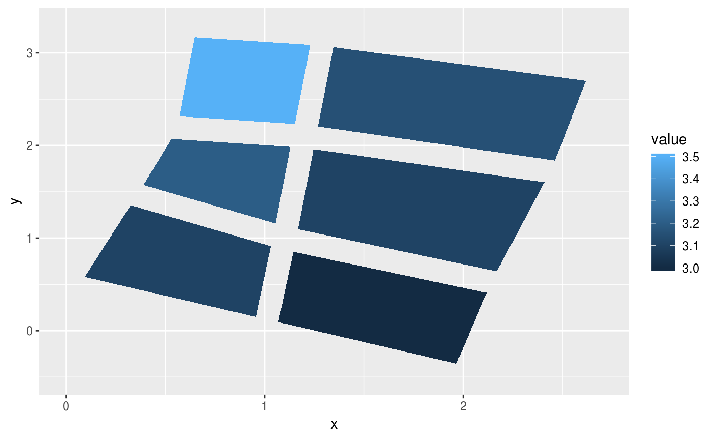
ggplot(datapoly, aes(x = x, y = y)) +
geom_shape(aes(fill = value, group = id), radius = unit(3, 'mm'))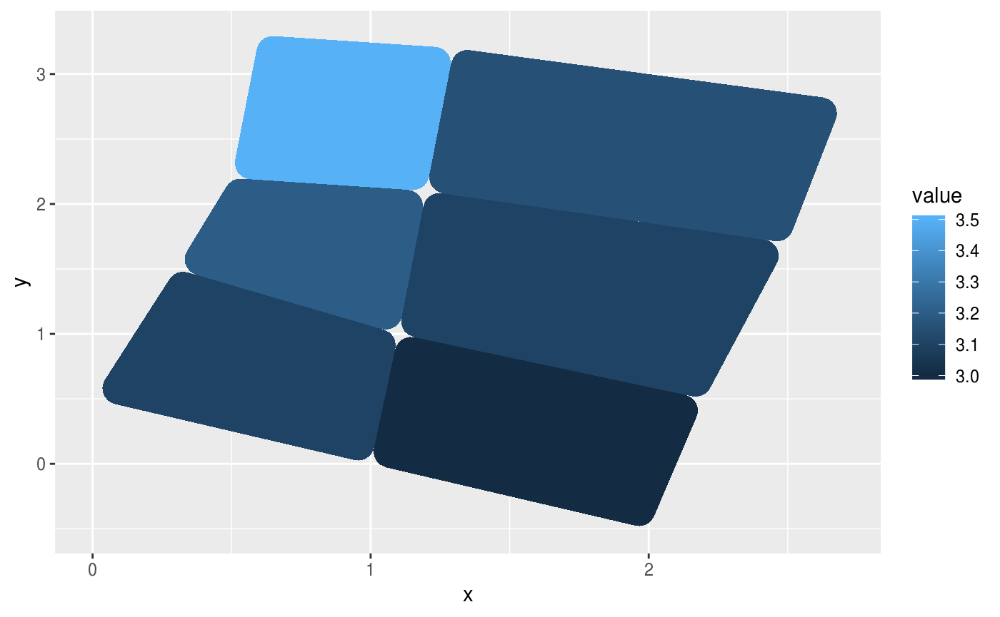
ggplot(datapoly, aes(x = x, y = y)) +
geom_shape(aes(fill = value, group = id), expand = unit(3, 'mm'), radius = unit(2, 'mm'), alpha = 0.5)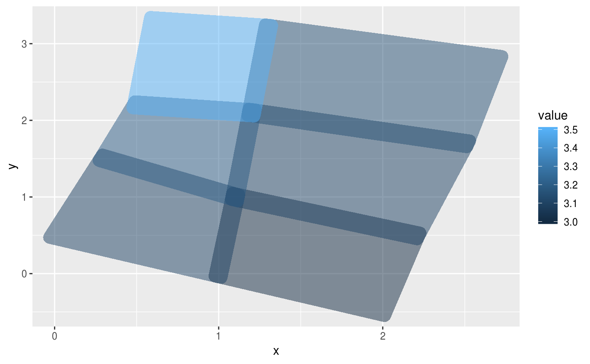
Arcs
Arcs are segments of a circle and defined by a centre point, a radius and a start and end angle. In ggforce arcs come in two flavors: arc and arc_bar, where the former draws an arc with a single line and the latter draws it as a polygon that can have a fill and outline. A wedge is a special case of arc_bar where the innermost radius is 0. The most well known use of arcs in plotting is with the much loathed pie chart (and its cousin the donut chart). The reason for all the hatred against pie charts are just and related to the fact that humans are much better at comparing heights than angles. Because of this a bar chart will always communicate your data better than a pie chart. Donut charts are a little better as the hole in the middle forces the eye to compare arc spans rather than angles, but it is still better to use a bar chart. Arcs, being a fundamental visual element, can be used for other things though, such as sunburst plots or annotating radial visualizations.
As pie charts are most well known, we’ll start by upsetting all visualization expert and produce one:
# We'll start by defining some dummy data
pie <- data.frame(
state = c('eaten', 'eaten but said you didn\'t', 'cat took it',
'for tonight', 'will decompose slowly'),
focus = c(0.2, 0, 0, 0, 0),
start = c(0, 1, 2, 3, 4),
end = c(1, 2, 3, 4, 2*pi),
amount = c(4,3, 1, 1.5, 6),
stringsAsFactors = FALSE
)
p <- ggplot() + theme_no_axes() + coord_fixed()
# For low level control you define the start and end angles yourself
p + geom_arc_bar(aes(x0 = 0, y0 = 0, r0 = 0, r = 1, start = start, end = end,
fill = state),
data = pie)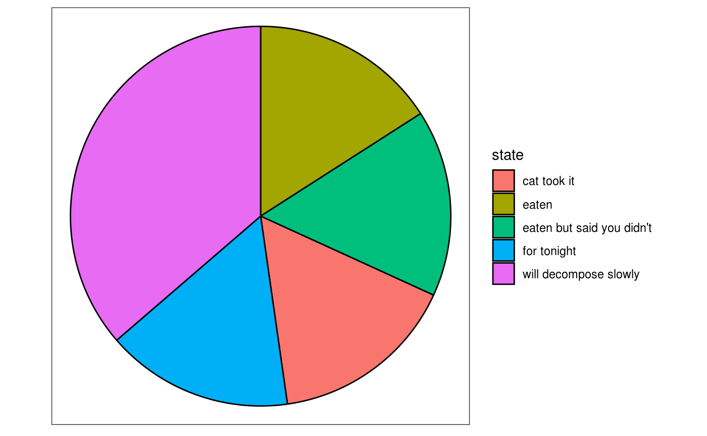
# But often you'll have values associated with each wedge. Use stat_pie then
p + geom_arc_bar(aes(x0 = 0, y0 = 0, r0 = 0, r = 1, amount = amount,
fill = state),
data = pie, stat = 'pie')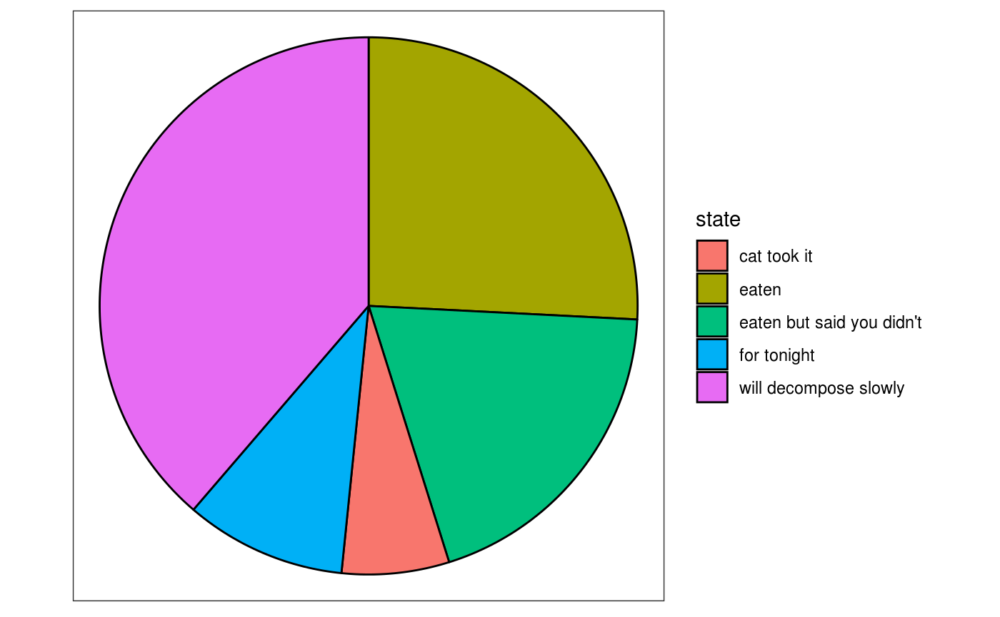
# The wedges can be exploded away from the centre using the explode aesthetic
p + geom_arc_bar(aes(x0 = 0, y0 = 0, r0 = 0, r = 1, amount = amount,
fill = state, explode = focus),
data = pie, stat = 'pie')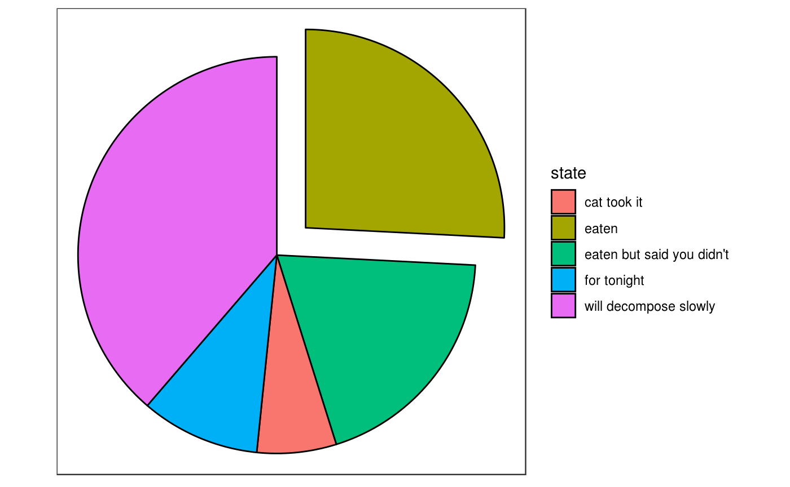
# And a donut can be made by setting r0 to something > 0
p + geom_arc_bar(aes(x0 = 0, y0 = 0, r0 = 0.8, r = 1, amount = amount,
fill = state, explode = focus),
data = pie, stat = 'pie')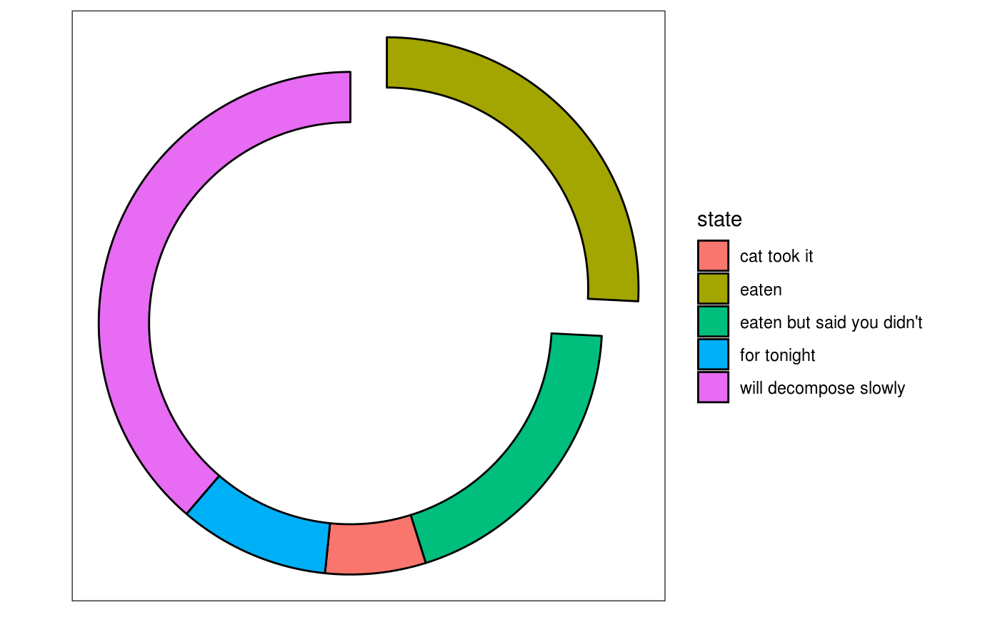
While the above produces some of the most hated plot types in the world it does showcase the use of arcs in plotting. Arcs can be used in many different visualization types to annotate radial position etc. as in e.g. choord diagrams.
Using arc is just like arc_bar except that it does not take an r0 argument and does not have any fill. Furthermore the arc geoms contains the 0 and 2 versions making gradients and interpolation possible.
arcs <- data.frame(
start = 0,
end = runif(5) * 2*pi,
r = seq_len(5)
)
p <- ggplot() + theme_no_axes() + coord_fixed()
p + geom_arc(aes(x0 = 0, y0 = 0, r = r, start = start, end = end,
alpha = ..index.., colour = factor(r)), data = arcs)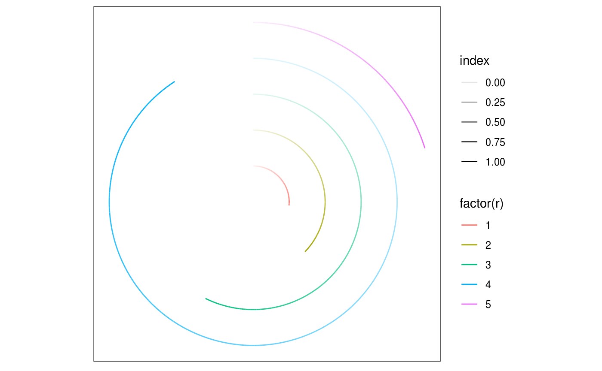
# The 0 version will not properly expand the axes, as their extend is only
# known at draw time
p + geom_arc0(aes(x0 = 0, y0 = 0, r = r, start = start, end = end,
colour = factor(r)), data = arcs, ncp = 50)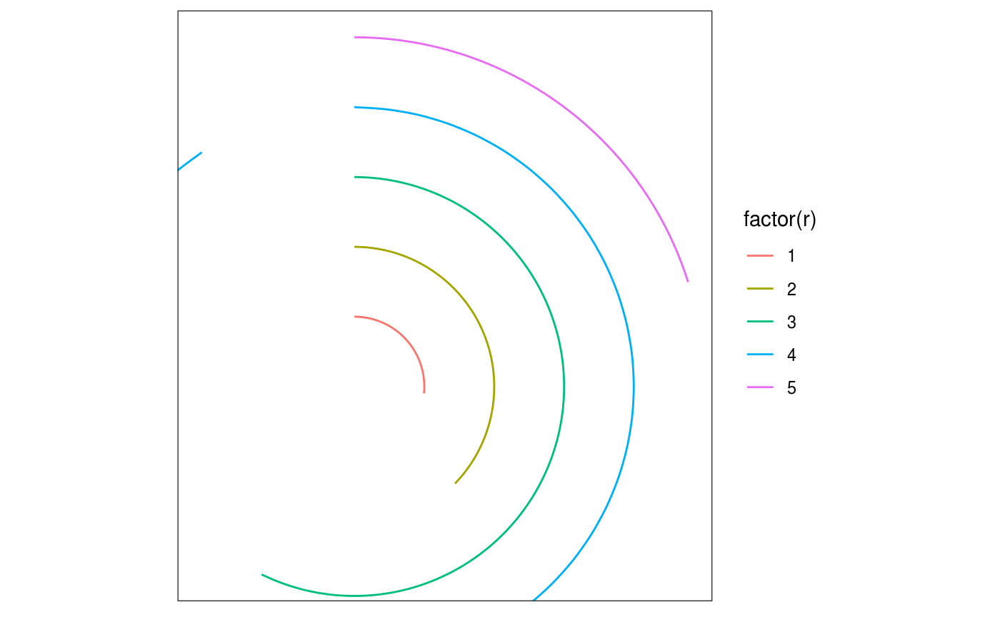
# The 2 version allow you to create gradients, but the input data format is
# different
arcs <- rbind(data.frame(end = 0, r = 1:5), arcs[, c('end', 'r')])
arcs$col <- sample(5, 10, TRUE)
p + geom_arc2(aes(x0 = 0, y0 = 0, r = r, group = r, end = end,
colour = factor(col)), data = arcs, size = 3)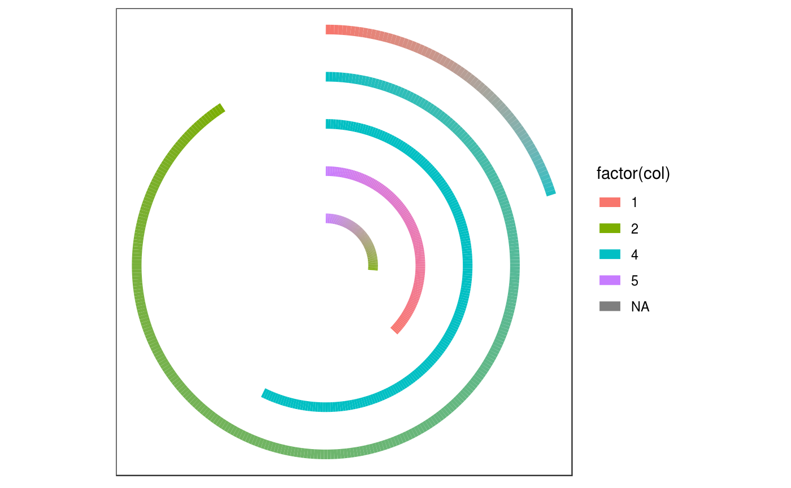
Circles
Standard ggplot2 generally has you covered when it comes to drawing circles through the point geom, it does not make it possible to draw circles where the radius of the circles are related to the coordinate system. The geom_circle from ggforce are precisely for that. It generates a polygon resembling a circle based on a center point and a radius, making the radius directly readable from the axes. The geom are mainly intended to make it possible to draw circles with fine grained control, but will often not have any utility in itself. An exception would be in plotting trees as enclosure diagrams using circles. Here it will be necessary to have fine control over radius.
# Here are some data describing some circles
circles <- data.frame(
x0 = rep(1:3, 2),
y0 = rep(1:2, each=3),
r = seq(0.1, 1, length.out = 6)
)
ggplot() + geom_circle(aes(x0=x0, y0=y0, r=r, fill=r), data=circles)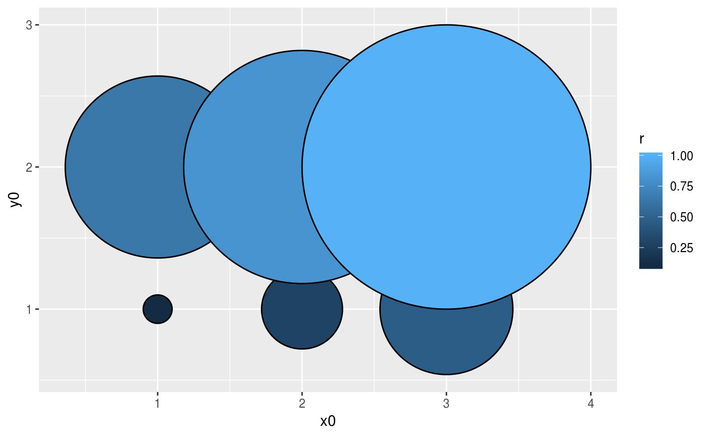
# As it is related to the coordinate system, coord_fixed() is needed to ensure
# true circularity
ggplot() + geom_circle(aes(x0=x0, y0=y0, r=r, fill=r), data=circles) +
coord_fixed()# Use n to set the smoothness of the circle
ggplot() + geom_circle(aes(x0=x0, y0=y0, r=r, fill=r), data=circles, n=10) +
coord_fixed()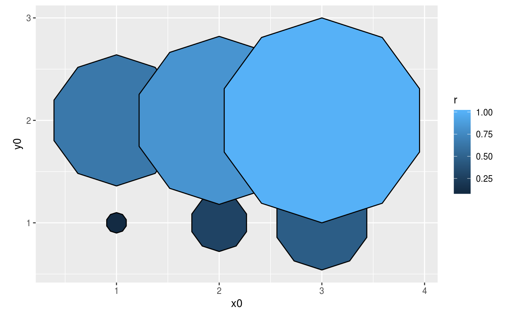
Ellipse
As with circles it is possible to draw ellipses according to the coordinate system. It requires some more parameters than geom_circle, namely two radii and an angle:
# Basic usage
ggplot() +
geom_ellipse(aes(x0 = 0, y0 = 0, a = 10, b = 3, angle = 0)) +
coord_fixed()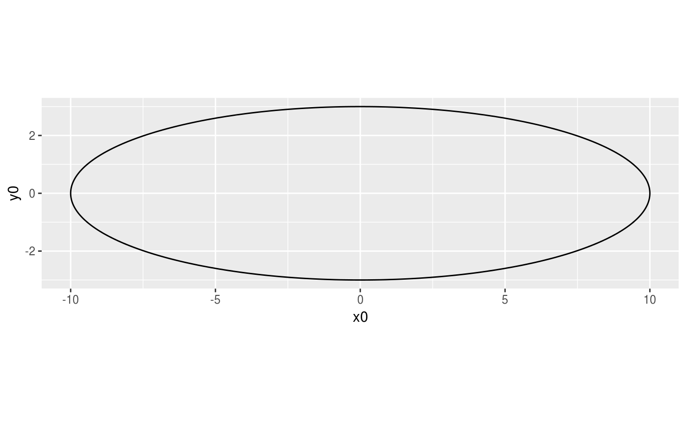
# Rotation
# Note that it expects radians and rotates the ellipse counter-clockwise
ggplot() +
geom_ellipse(aes(x0 = 0, y0 = 0, a = 10, b = 3, angle = pi/4)) +
coord_fixed()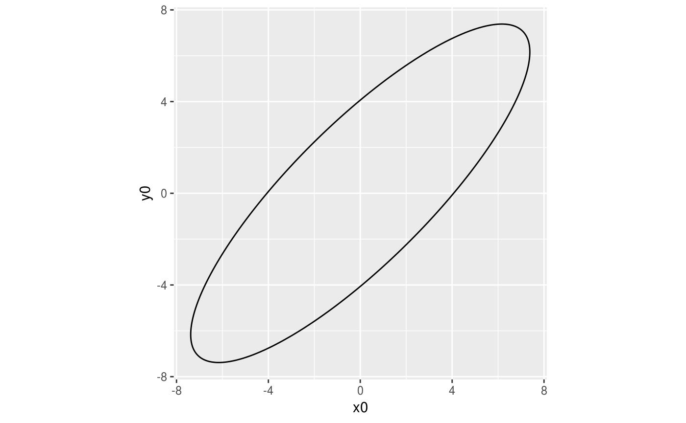
Be aware that ggplot2 contains a stat_ellipse which estimates uncertainty ellipses to points.
Links
Links are the ggforce equivalent of segments, i.e. connecting two points by a straight line. While geom_segment() does a decent job of this, the link geoms expand the straight line into the base, 0, and 2 versions making it possible to interpolate aesthetics and add gradients to the segment. The 0 version is just a renamed geom_segment included for completeness.
links <- data.frame(
x = 0, y = 0, xend = runif(10), yend = runif(10)
)
ggplot() + geom_link(aes(x = x, y = y, xend = xend, yend = yend,
alpha = ..index..), data = links)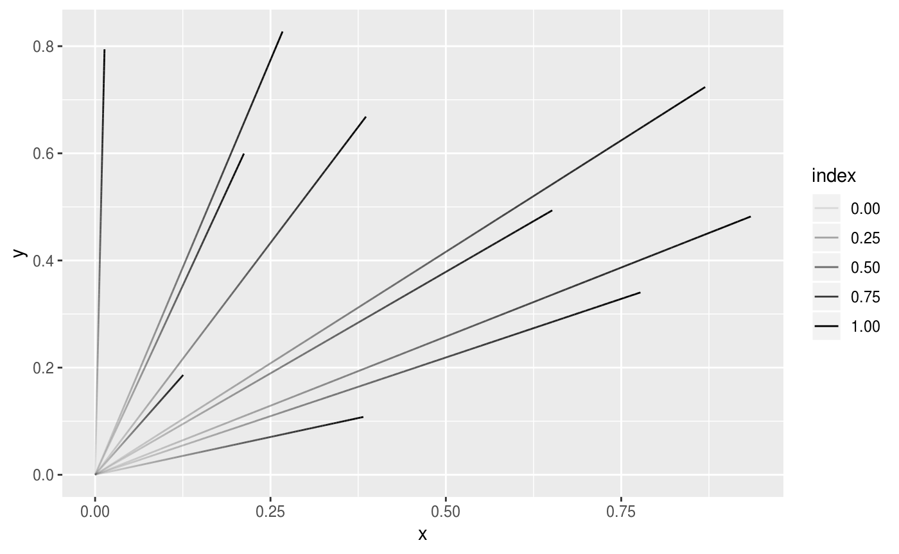
# The 2 version also allows for drawing paths
links2 <- data.frame(
x = runif(10), y = runif(10), group = rep(c(1,2), each = 5),
colour = sample(5, 10, TRUE)
)
ggplot() + geom_link2(aes(x = x, y = y, group = group, colour = factor(colour)),
data = links2)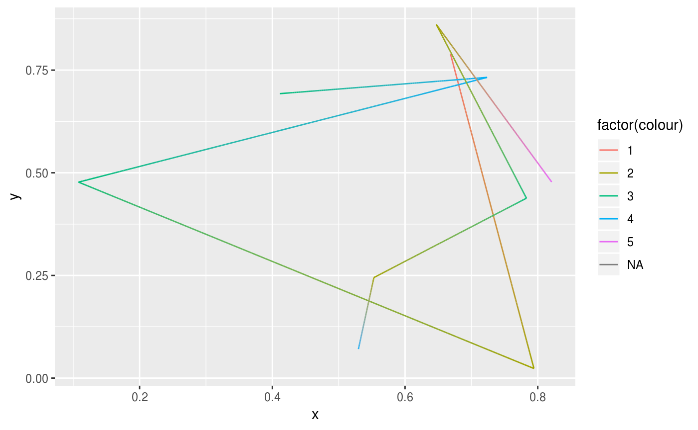
Beziers
A bezier is a smooth curve defined by its end point and one or two control points. It is well known in vector drawing software such as Adobe Illustrator, where the control points provide an intuitive way to manipulate the curve. In essence the control points define the direction and the force the curve exits the end point with - the more distant the control point is to the end point, the longer the curve travels in the direction of the control point before beginning to move towards the other end point.
There is no succinct way to describe a bezier in a single row, so all the versions use multiple rows to describe the bezier, grouped by the group aesthetic. The first row is the start point followed by one or two control points and then the end point. As bezierGrob from grid only supports quadratics beziers (2 control points) the 0-version approximates a qubic bezier by placing placing the two control points on top of each other.
beziers <- data.frame(
x = c(1, 2, 3, 4, 4, 6, 6),
y = c(0, 2, 0, 0, 2, 2, 0),
type = rep(c('cubic', 'quadratic'), c(3, 4)),
point = c('end', 'control', 'end', 'end', 'control', 'control', 'end')
)
help_lines <- data.frame(
x = c(1, 3, 4, 6),
xend = c(2, 2, 4, 6),
y = 0,
yend = 2
)
ggplot() + geom_segment(aes(x = x, xend = xend, y = y, yend = yend),
data = help_lines,
arrow = arrow(length = unit(c(0, 0, 0.5, 0.5), 'cm')),
colour = 'grey') +
geom_bezier(aes(x= x, y = y, group = type, linetype = type),
data = beziers) +
geom_point(aes(x = x, y = y, colour = point), data = beziers)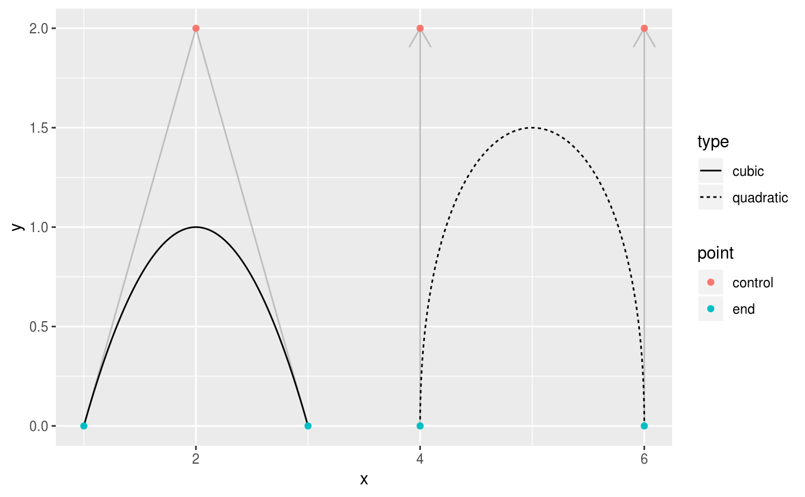
Diagonals
In visualization parlance a diagonal is a path connecting two points through a smooth curve that starts perpendicular to either the x or y axis and gradually bends to meet the other end. It is often implemented as cubic bezier curves with the control points of each end extending perpendicular from the end points. Diagonals are often used in visualising trees (see geom_edge_diagonal() in ggraph) but is provided here as a general construct.
data <- data.frame(
x = rep(0, 10),
y = 1:10,
xend = 1:10,
yend = 2:11
)
ggplot(data) +
geom_diagonal(aes(x, y, xend = xend, yend = yend))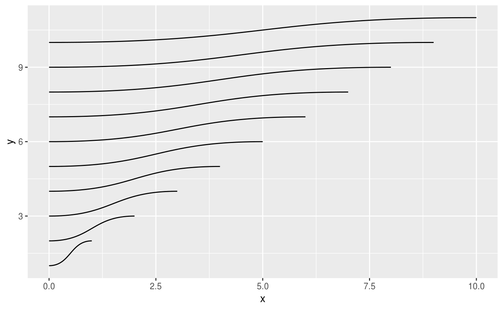
Wide Diagonals
As arcs have arc_bar diagonals have diagonal_wide for drawing diagonals as polygons, potentially with changing thickness. It requires four points per diagonal, and as with the standard diagonal it will expect the flow to be in the x-direction. As geom_diagonal_wide() uses geom_shape() you get all the controls of that, such as corner rounding and expansion.
data <- data.frame(
x = c(1, 2, 2, 1, 2, 3, 3, 2),
y = c(1, 2, 3, 2, 3, 1, 2, 5),
group = c(1, 1, 1, 1, 2, 2, 2, 2)
)
ggplot(data) +
geom_diagonal_wide(aes(x, y, group = group),
colour = 'black', fill = 'steelblue', radius = 0.01)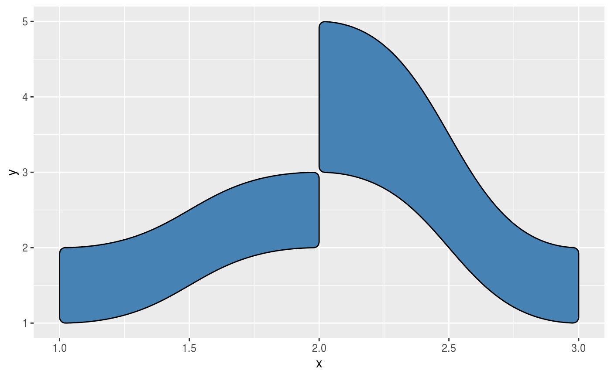
Parallel sets
A parallel sets diagram is a way to show multidimensional categorical data. It will show the overlaps between levels in multiple categories by drawing thick diagonals between levels in parallel categorical axes. A classic way of exemplifying this is with the titanic survival data set.
A small note is that the way to normally represent this type of data is by encoding each categorical level in its own column, but this does not work in ggplot2, as it requires all values for the same axis to be in the same column. ggforce facilitates this by providing a helper function for transforming data in its natural representation into one understood by ggplot2.
## Class Sex Age Survived value
## 1 1st Male Child No 0
## 2 2nd Male Child No 0
## 3 3rd Male Child No 35
## 4 Crew Male Child No 0
## 5 1st Female Child No 0
## 6 2nd Female Child No 0## Class Sex Age Survived value id x y
## 1 1st Male Child No 0 1 Class 1st
## 2 2nd Male Child No 0 2 Class 2nd
## 3 3rd Male Child No 35 3 Class 3rd
## 4 Crew Male Child No 0 4 Class Crew
## 5 1st Female Child No 0 5 Class 1st
## 6 2nd Female Child No 0 6 Class 2ndggplot(data, aes(x, id = id, split = y, value = value)) +
geom_parallel_sets(aes(fill = Sex), alpha = 0.3, axis.width = 0.1) +
geom_parallel_sets_axes(axis.width = 0.1) +
geom_parallel_sets_labels(colour = 'white')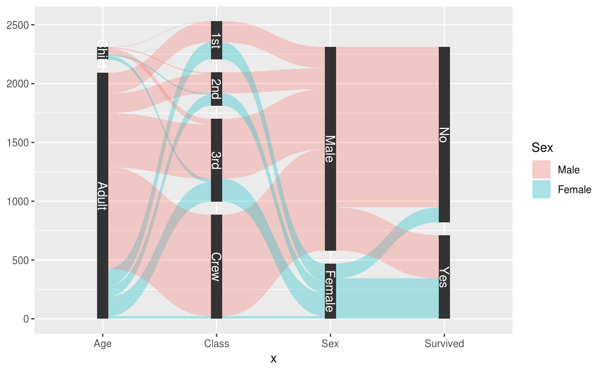
B-splines
Like beziers b-splines are smooth curves, but unlike beziers b-splines are defined by a vector of control points along which the curve will flow, without necessarily passing through any of the control points. The 0-version is impemented using xsplineGrob with shape = 1, which approximates a b-spline, but a slight variation is expected due to this.
spline <- data.frame(
x = runif(5), y = runif(5), group = 1
)
ggplot(spline) + geom_path(aes(x = x, y = y, group = group), colour = 'grey') +
geom_bspline(aes(x = x, y = y, group = group)) +
geom_point(aes(x = x, y = y))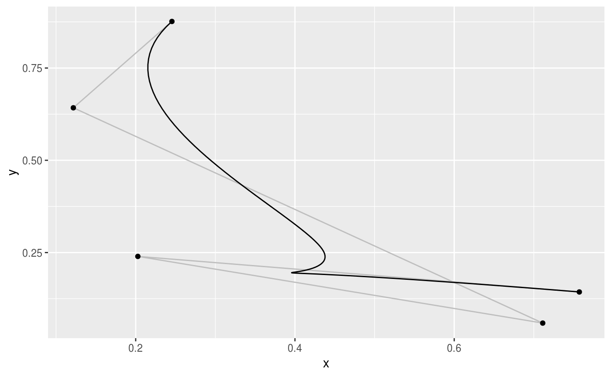
SinaPlot
geom_sina is inspired by the strip chart and the violin plot and operates by letting the normalized density of points restrict the jitter along the x-axis. The representation of the data as a whole remains simple, the density distribution is apparent, and the plot still provides information on how many data points are present in each class and whether outliers are driving the tails of the distribution. In this way it is possible to convey information about the mean/median of the data, its variance and the actual number of data points together with a density distribution.
###Sample gaussian distributions with 1, 2 and 3 modes.
df <- data.frame(
"Distribution" = c(rep("Unimodal", 500),
rep("Bimodal", 250),
rep("Trimodal", 600)),
"Value" = c(rnorm(500, 6, 1),
rnorm(200, 3, .7), rnorm(50, 7, 0.4),
rnorm(200, 2, 0.7), rnorm(300, 5.5, 0.4), rnorm(100, 8, 0.4))
)
# Reorder levels
df$Distribution <- factor(df$Distribution,
levels(df$Distribution)[c(3, 1, 2)])
p <- ggplot(df, aes(Distribution, Value))
p + geom_violin(aes(fill = Distribution))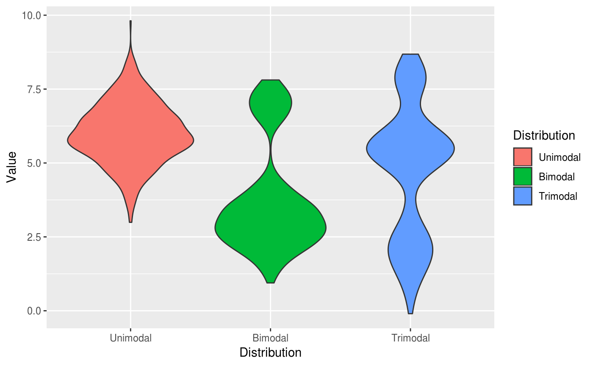
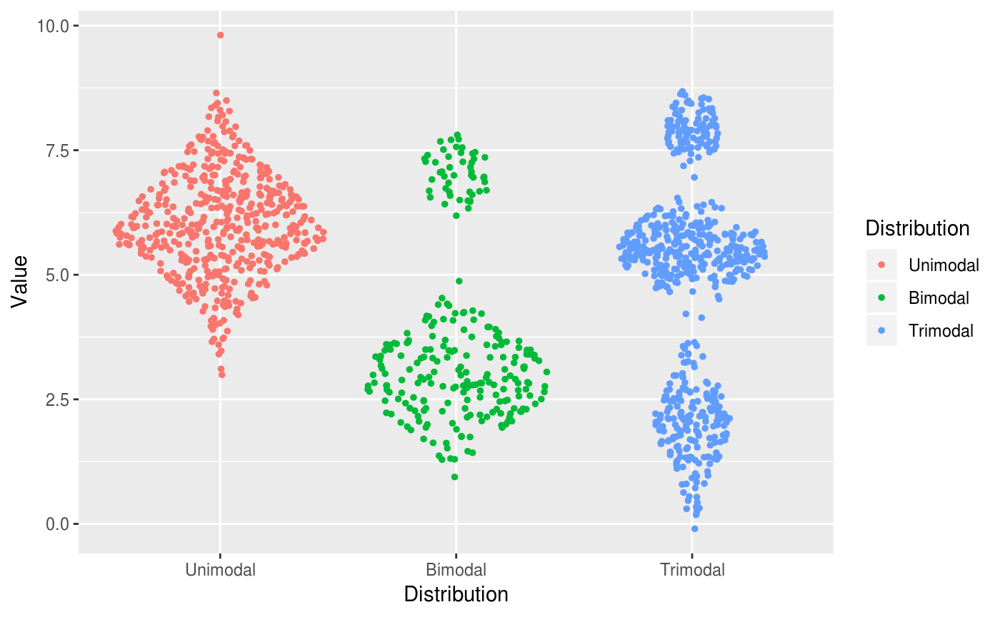
Spirographs
Spirographs are most well known for the plastic toys consisting of interlocking gears that can be used to create circular patterns. There’s math behind it though, so it’s not a problem to provide a parameterized version where the gear dimensions define the resulting pattern. One nice benefit of doing the drawing on a computer is that you are not limited by physical boundaries, and it is thus possible to create pattern not possible wih the standard toy set (e.g. the pencil does not have to be positioned inside the revolving gear).

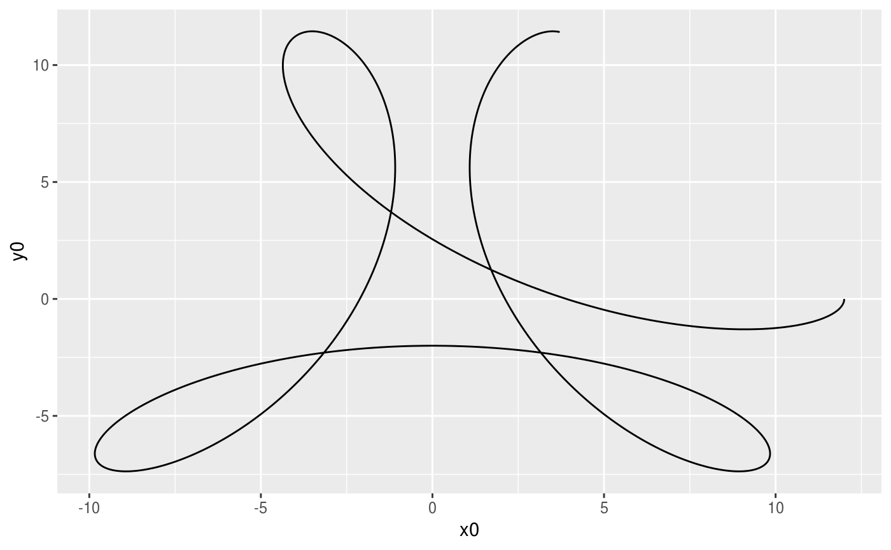
# Let the inner gear circle the outside of the outer gear
ggplot() +
geom_spiro(aes(R = 10, r = 3, d = 5, outer = TRUE))
Facets
Facets has been an integral part of the success of ggplot2. With v2.2 facets extensions finally became a possibility. While the idea of facets is to create small multiples of your plots based on a set of given variables in your data, extensions are not bound by this and they can be used for any type of layout work.
Pagination
When using facet_wrap() and facet_grid() with many-levelled variables you often end up with too small plots for any meaningful insight to be gained. ggforce provides a simple extension to both of the base facetting functions by allowing the plots to be split out into multiple pages. This is done by specifying the number of rows and columns on each page as well as which page to plot:
# Standard facetting
ggplot(diamonds) +
geom_point(aes(carat, price), alpha = 0.1) +
facet_wrap(~cut:clarity, ncol = 3)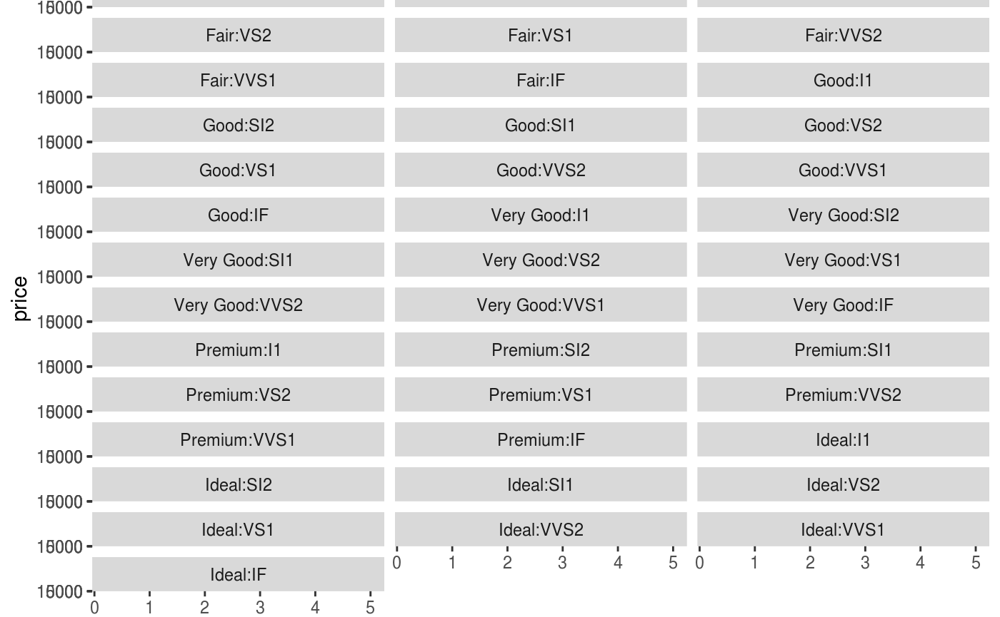
# Pagination
ggplot(diamonds) +
geom_point(aes(carat, price), alpha = 0.1) +
facet_wrap_paginate(~cut:clarity, ncol = 3, nrow = 3, page = 1)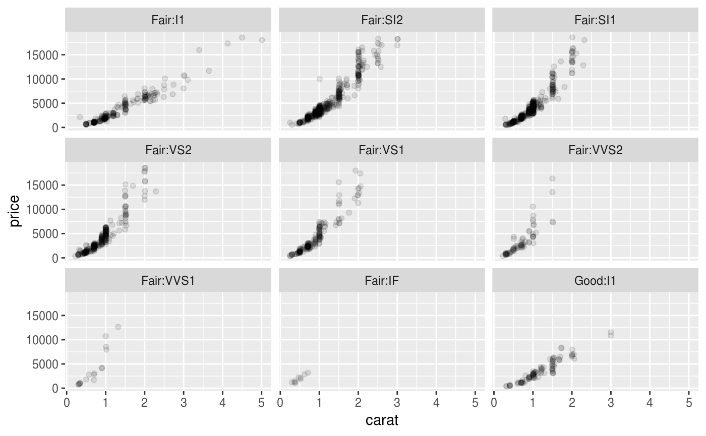
# Works with grid as well
ggplot(diamonds) +
geom_point(aes(carat, price), alpha = 0.1) +
facet_grid_paginate(color~cut:clarity, ncol = 3, nrow = 3, page = 4)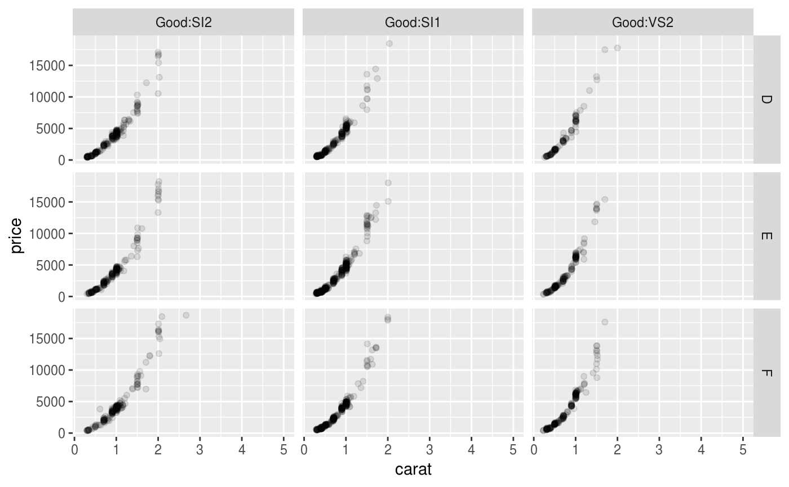
A simple helper is provided to calculate the number of pages in a paginated plot
p <- ggplot(diamonds) +
geom_point(aes(carat, price), alpha = 0.1) +
facet_wrap_paginate(~cut:clarity, ncol = 3, nrow = 3, page = 1)
n_pages(p)## [1] 5Contextual zoom
Zooming in ggplot2 has always been done in one of two ways: By limiting the positional scale or by limiting the coordinate system. In the former actual data values are removed leading to a potential change in derived calculations ( e.g. a fitted line had different parameters) while the later behaves more as you would expect. ggforce provides a third option in the form of a new facetting function: facet_zoom(). Instead of describing it lets see how it works:
ggplot(iris, aes(Petal.Length, Petal.Width, colour = Species)) +
geom_point() +
facet_zoom(x = Species == "versicolor")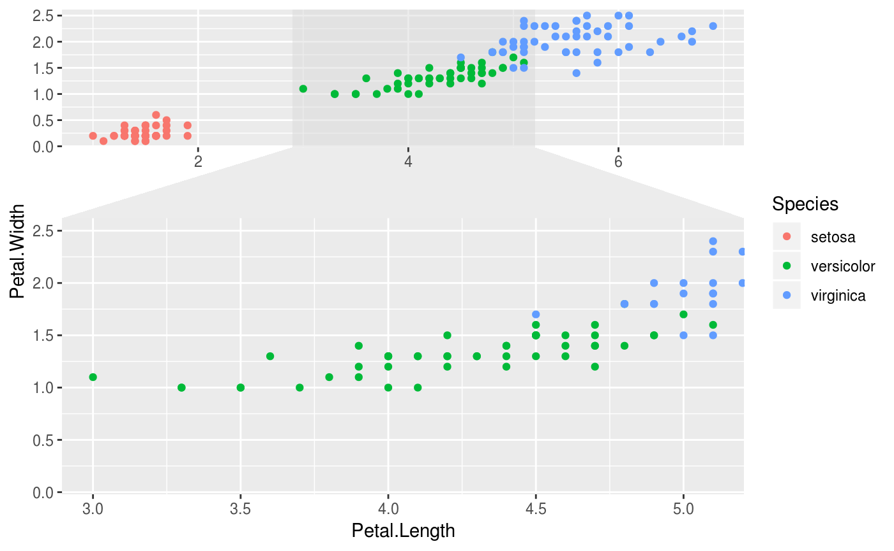
As can be seen the main plot is now zoomed in on the data points that satisfies the condition given in the constructor, but an overview plot is retained along with an indication of the position of the zoomed in area. The example above is zooming in on the x-axis, but y-axis zoom is supported as well:
ggplot(iris, aes(Petal.Length, Petal.Width, colour = Species)) +
geom_point() +
facet_zoom(y = Species == "versicolor")
Both axes can be zoomed in as well. If the same condition is used for both axes the xy shorthand can be used:
# Zoom in on versicolor on both axes
ggplot(iris, aes(Petal.Length, Petal.Width, colour = Species)) +
geom_point() +
facet_zoom(xy = Species == "versicolor")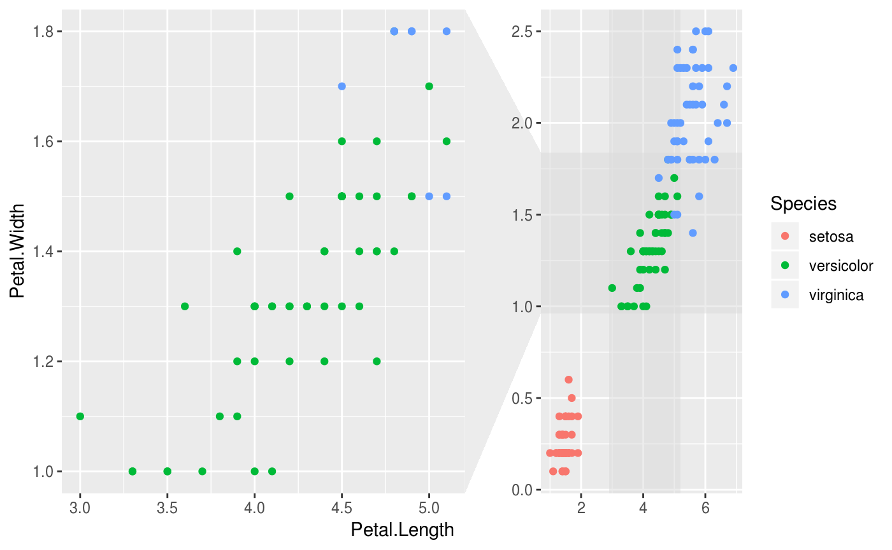
# Use different zoom criteria on each axis
ggplot(iris, aes(Petal.Length, Petal.Width, colour = Species)) +
geom_point() +
facet_zoom(x = Species != 'setosa', y = Species == 'versicolor')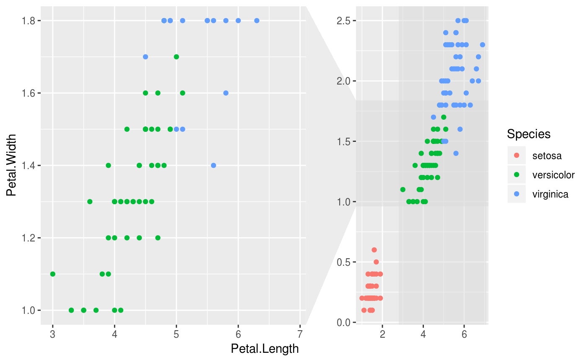
For a truly fanzy representation each axis zoom can be shown individually as well:
ggplot(iris, aes(Petal.Length, Petal.Width, colour = Species)) +
geom_point() +
facet_zoom(x = Species != 'setosa', y = Species == 'versicolor',
split = TRUE)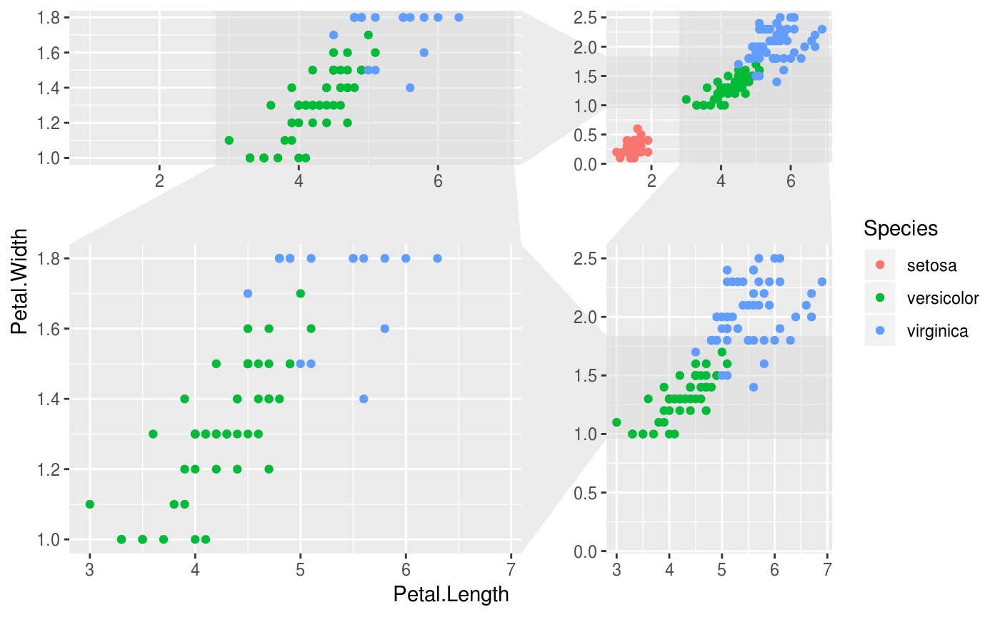
The relative size of the zoom area can be controlled with the zoom.size argument, while the appearance of the indicator can be controlled by modifying the strip.background theme setting (or zoom though it requires validate = FALSE) or potentially be removed completely by settingshow.area = FALSEinfacet_zoom()`.
If you want to control the zoom area directly this can be done using the xlim and ylim arguments instead of x and/or y. This lets you set the range for the zoom panel. Furthermore it is possible to control which data gets plotted in the context and zoom panels selectively through the zoom.data argument that takes an expression to evaulate for each row in the data (as x, y, and xy) and assigns data to the zoom panel if it evaluates to TRUE, the context panel if it evaluates to FALSE and both if it evaulates to NA (the default). Combining all this into one plot we can get this:
volcano3d <- structure(reshape2::melt(volcano), names = c('x', 'y', 'z'))
ggplot() +
stat_contour(aes(x, y, z = z), data = cbind(volcano3d, zoom = FALSE), geom = 'contour', colour = 'grey20') +
stat_contour(aes(x, y, z = z, fill = ..level..), data = cbind(volcano3d, zoom = TRUE), geom = 'polygon', bins = 30) +
facet_zoom(xlim = c(25, 50), ylim = c(20, 40), horizontal = FALSE, zoom.data = zoom, split = T) +
scale_fill_distiller(direction = 1, palette = 2) +
theme_minimal() +
theme(zoom = element_rect(fill = 'grey75', colour = NA), validate = FALSE)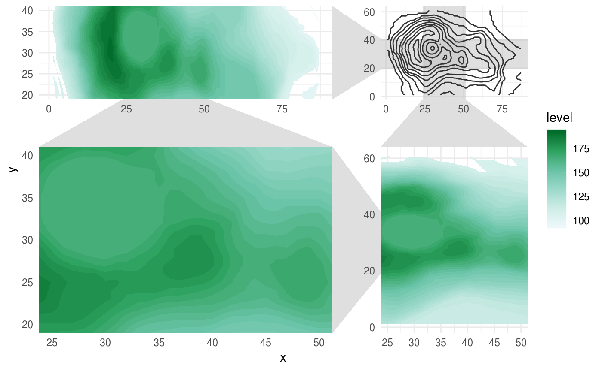
Stereographic projection
One of the more “fun and useless” additions to ggforce is facet_stereo which allows the user to create a stereographic projection of the plot in order to make a faux 3D plot. facet_stereo shifts features sligtly to the left and right based on the provided depth-aesthetic to simulate how each eye will see a sligtly different picture when looking at a 3D scenery. In order to experience the 3D effect, either look at the plot with 3D hardware such as Google Cardboard or by using relaxed focusing where the eyes focus on the far distance while looking at the plot (the same technique used when looking at stereograms such as Magic Eye).
In order to use facet_stereo provide a depth aesthetic to the layers (will generate a warning) and modify the depth perception with scale_depth:
ggplot(mtcars) +
geom_point(aes(mpg, disp, depth = wt)) +
scale_depth(range = c(0, 0.2)) +
facet_stereo()## Warning: Ignoring unknown aesthetics: depth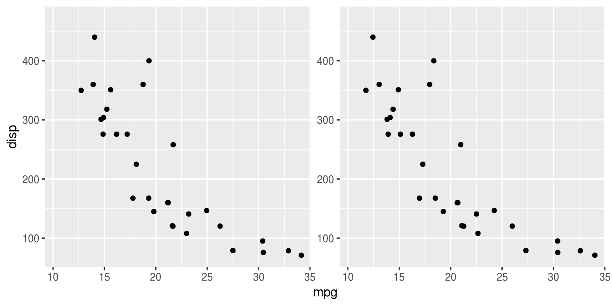
To improve the effect you can scale the size of the features as well as the colour to enhance the 3D feeling
ggplot(mtcars) +
geom_point(aes(mpg, disp, depth = wt, colour = wt, size = wt)) +
scale_size(range = c(1.5, 3)) +
scale_color_gradient(low = 'grey70', high = 'black') +
facet_stereo()## Warning: Ignoring unknown aesthetics: depth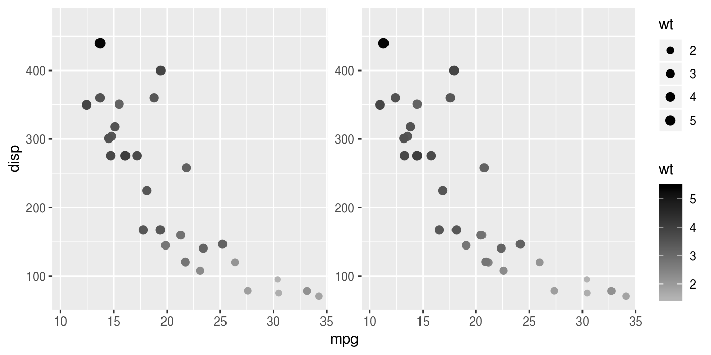
Note that due to the design of ggplot2 there are some limitations to this, most notably that layers will always be placed on top of each other no matter their depth values. This means that you can end up with features occluding other features in front of them. Also, even though grid lines are placed at depth = 0 they will always be behind all features.
Transformations
Transformations are not really a part of ggplot2, but rather the scales package. Nevertheless it is an integral part of working with ggplot2 through its use in manipulating scales. ggforce expands the use of transformations to also include coordinate transformations.
Univariate transformations
This section describes the new transformations offered by ggforce for manipulating scales. In general the scales package has you well covered but there are some missing pieces:
Power transformations
Suspicously missing from the scales package is a generalized power transformation that is, e.g. x2. This type of transformation is only represented by the square root transformation which equals x1/2. ggforce provides a constructor for power transformations that can be used on scales etc.
## Transformer: power of 3## [1] 1 8 27 64 125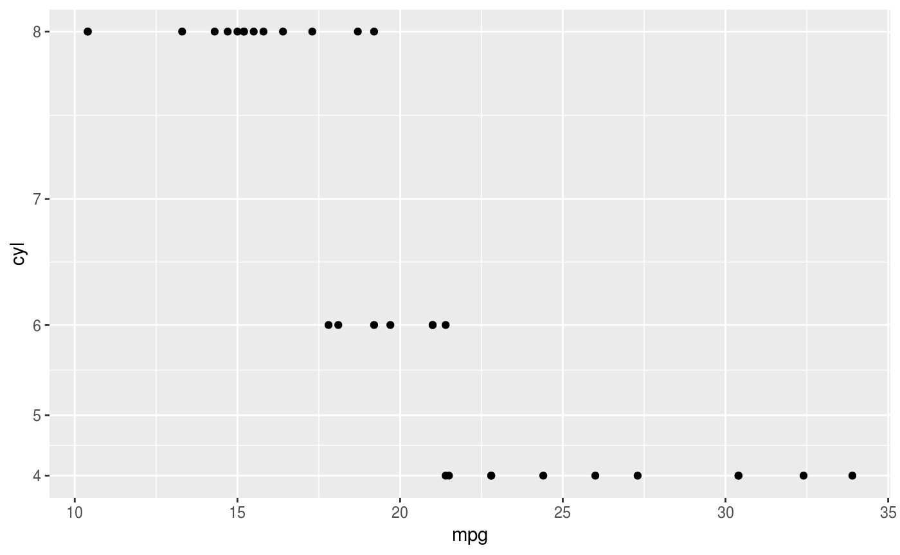
Reversing transformations
Scales provide reverse_trans() to create a reverse linear transformation. Unfortunatly you’re out of luck if you want a reverse log transformation etc. ggforce provides a transformation modifier that can reverse any transformation object passed into it:
## Transformer: reverse-power of 3
Coordinate transformations
Coordinate transformation takes coordinates and does something to them. It can be simple rotations, shearing and reflections as you know from different image processing applications, or translating between different ways of representing data, e.g. radial to cartesian transformations. These types of transformations are closely linked to applying different coordinate systems to your plot, e.g. using coord polar, but can be applied to your data upfront instead of on the whole plot.
Radial transformations
radial_trans() converts radi and angle to x and y positions in a cartesian coordinate system. That means that if you have a point defined by its position on a circle you can easily get the x and y coordinates for it. The angle doesn’t need to be provided in radians or degrees as both the angular range and the radius range are defined when the transformation object is created. On top of that it can be defined where 0 starts (defaults to 12 o’clock) and which direction is used among others - see the documentation for radial_trans for a more in-depth description
line <- data.frame(
x = seq(0, 10, length.out = 100),
y = seq(0, 10, length.out = 100)
)
r_trans <- radial_trans(r.range = c(0, 1), a.range = c(0, 2))
spiral <- r_trans$transform(r = line$x, a = line$y)
ggplot() + geom_path(aes(x, y), data = line, colour = 'red') +
geom_path(aes(x, y), data = spiral, colour = 'green')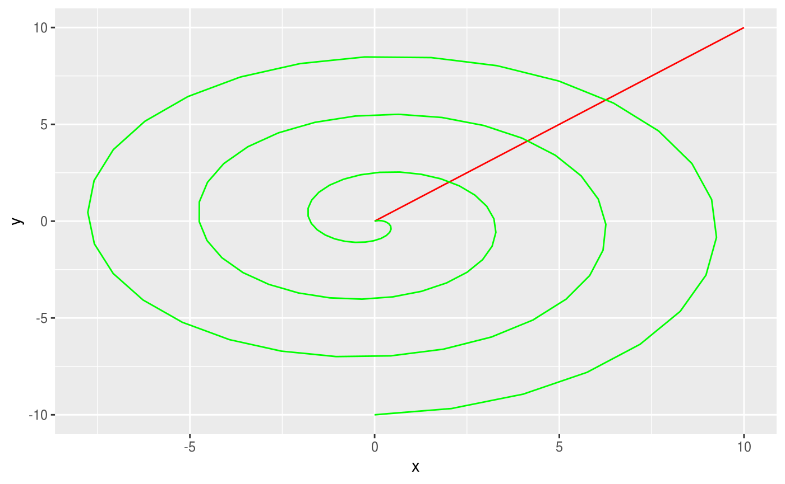
Linear transformation
The family of linear transformations cover scaling/stretching, rotation, shearing, reflection, and translation. All of these are implemented in the linear_trans constructor that lets you compose a sequence of transformation steps, either fixed or parameterized. To avoid dealing with transformation matrices and ease parameterisation each transformation is encapsulated into a function that creates a transformation matrix. All transformations are done relative to the origin so shapes needs to be translated into the origin if e.g. rotation around their own center (rather than [0, 0]) is required.
# parameterized rotation and translation, fixed shearing
trans <- linear_trans(rotate(a), shear(1, 0), translate(x1, y1))
square <- data.frame(x = c(0, 0, 1, 1), y = c(0, 1, 1, 0))
square2 <- trans$transform(square$x, square$y, a = pi/3, x1 = 4, y1 = 8)
square3 <- trans$transform(square$x, square$y, a = pi/1.5, x1 = 2, y1 = -6)
square_all <- rbind(square, square2, square3)
square_all$group <- rep(1:3, each = 4)
ggplot(square_all, aes(x, y, group = group)) +
geom_polygon(aes(fill = factor(group)), colour = 'black')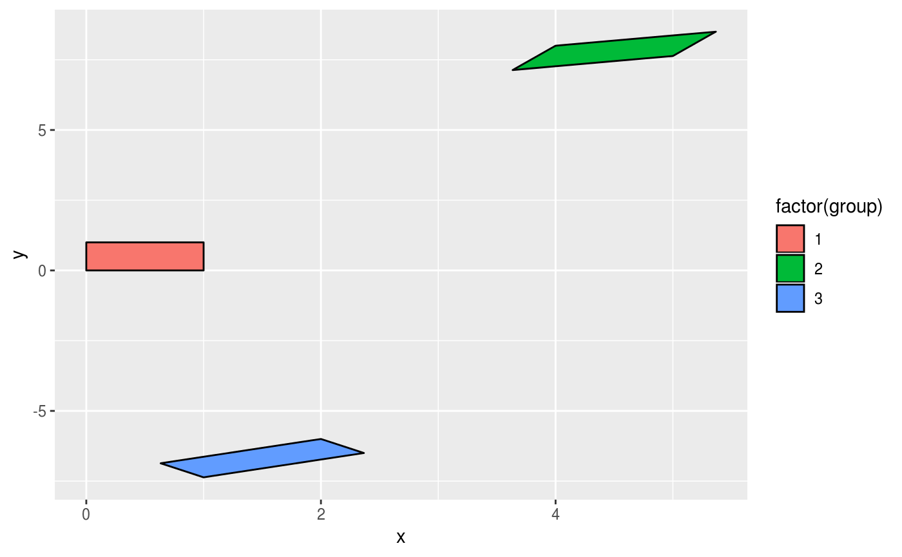
Scales
Currently only a single new scale is added to ggplot2 with ggforce, but it is a rather nifty little fellow.
Units
Often, when working with numeric data, there’s a unit attached to the values, but in R this unit is not attached to your data but rather lives in your head. The developers of the units package has done something about this with the units class, which carries unit information around with a numeric vector. It provides more than semantics though. If you assign a new unit to the data it will check whether the new unit is compatible with the old one. If it is the values gets converted automatically, and if not an error is thrown. Furthermore, units also gets updated when making calculations with the values so units gets compounded during multiplication etc. Without ggforce units data would simply get converted to a numeric vector and work as normal. The scale_[x|y]_unit() scale from ggforce adds a couple of niceties though. When ggforce is loaded the scale is picked by default when plotting units data and you get all of the benefits for free.
The unit scale adds the unit to the axis label making it clear what the values on the axis is meassured in:
## udunits system database from /usr/share/xml/udunitsmiles <- as_units('miles')
gallon <- as_units('gallon')
horsepower <- as_units('horsepower')
mtcars$consumption <- mtcars$mpg * (miles/gallon)
mtcars$power <- mtcars$hp * horsepower
ggplot(mtcars) +
geom_point(aes(power, consumption))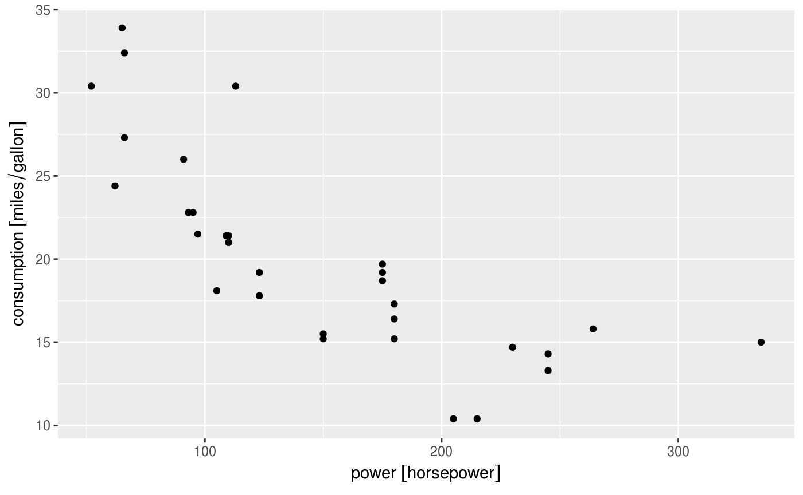
If data is transformed as part of an aesthetic assignment the unit will update automatically:
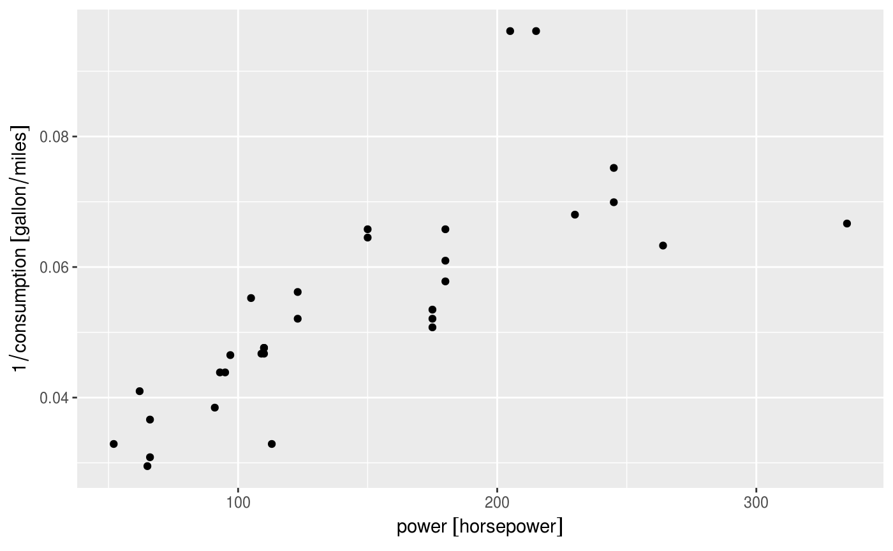
Lastly it is possible to change the units used for the axes on the fly without touching the underlying data through the unit argument in the scale constructor. When doing this the data is automatically converted to the new unit.
ggplot(mtcars) +
geom_point(aes(power, consumption)) +
scale_x_unit(unit = 'W') +
scale_y_unit(unit = 'km/l')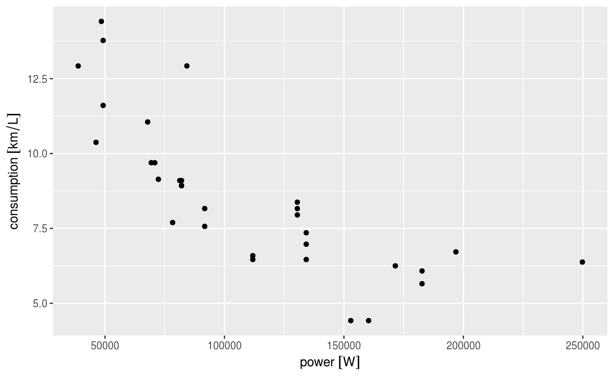
Depth
See facet_stereo…
A rocket
We’ll finish this of by drawing a rocket:
rocketData <- data.frame(
x = c(1,1,2,2),
y = c(1,2,2,3)
)
rocketData <- do.call(rbind, lapply(seq_len(500)-1, function(i) {
rocketData$y <- rocketData$y - c(0,i/500);
rocketData$group <- i+1;
rocketData
}))
rocketData2 <- data.frame(
x = c(2, 2.25, 2),
y = c(2, 2.5, 3)
)
rocketData2 <- do.call(rbind, lapply(seq_len(500)-1, function(i) {
rocketData2$x[2] <- rocketData2$x[2] - i*0.25/500;
rocketData2$group <- i+1 + 500;
rocketData2
}))
ggplot() + geom_link(aes(x=2, y=2, xend=3, yend=3, alpha=..index..,
size = ..index..), colour='goldenrod', n=500) +
geom_bezier(aes(x=x, y=y, group=group, colour=..index..),
data=rocketData) +
geom_bezier(aes(x=y, y=x, group=group, colour=..index..),
data=rocketData) +
geom_bezier(aes(x=x, y=y, group=group, colour=1),
data=rocketData2) +
geom_bezier(aes(x=y, y=x, group=group, colour=1),
data=rocketData2) +
geom_text(aes(x=1.65, y=1.65, label='ggplot2', angle=45),
colour='white', size=15) +
coord_fixed() +
scale_x_reverse() +
scale_y_reverse() +
scale_alpha(range=c(1, 0), guide='none') +
scale_size_continuous(range=c(20, 0.1), trans='exp',
guide='none') +
scale_color_continuous(guide='none') +
xlab('') + ylab('') +
ggtitle('ggforce: Accelerating ggplot2') +
theme(plot.title = element_text(size = 20))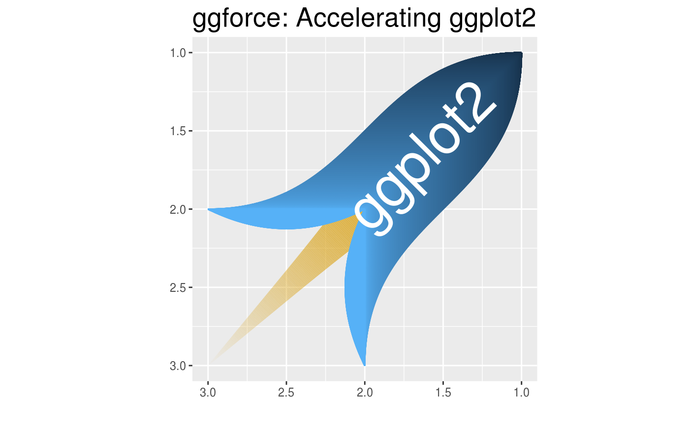
Session info
## ─ Session info ──────────────────────────────────────────────────────────
## setting value
## version R version 3.6.0 (2017-01-27)
## os Ubuntu 14.04.5 LTS
## system x86_64, linux-gnu
## ui X11
## language (EN)
## collate en_US.UTF-8
## ctype en_US.UTF-8
## tz UTC
## date 2019-06-06
##
## ─ Packages ──────────────────────────────────────────────────────────────
## package * version date lib source
## assertthat 0.2.1 2019-03-21 [1] CRAN (R 3.6.0)
## backports 1.1.4 2019-04-10 [1] CRAN (R 3.6.0)
## cli 1.1.0 2019-03-19 [1] CRAN (R 3.6.0)
## colorspace 1.4-1 2019-03-18 [1] CRAN (R 3.6.0)
## commonmark 1.7 2018-12-01 [1] CRAN (R 3.6.0)
## crayon 1.3.4 2017-09-16 [1] CRAN (R 3.6.0)
## desc 1.2.0 2018-05-01 [1] CRAN (R 3.6.0)
## digest 0.6.19 2019-05-20 [1] CRAN (R 3.6.0)
## dplyr 0.8.1 2019-05-14 [1] CRAN (R 3.6.0)
## evaluate 0.14 2019-05-28 [1] CRAN (R 3.6.0)
## farver 1.1.0 2018-11-20 [1] CRAN (R 3.6.0)
## fs 1.3.1 2019-05-06 [1] CRAN (R 3.6.0)
## ggforce * 0.2.2.9000 2019-06-06 [1] local
## ggplot2 * 3.1.1 2019-04-07 [1] CRAN (R 3.6.0)
## glue 1.3.1 2019-03-12 [1] CRAN (R 3.6.0)
## gtable 0.3.0 2019-03-25 [1] CRAN (R 3.6.0)
## htmltools 0.3.6 2017-04-28 [1] CRAN (R 3.6.0)
## knitr 1.23 2019-05-18 [1] CRAN (R 3.6.0)
## labeling 0.3 2014-08-23 [1] CRAN (R 3.6.0)
## lazyeval 0.2.2 2019-03-15 [1] CRAN (R 3.6.0)
## magrittr 1.5 2014-11-22 [1] CRAN (R 3.6.0)
## MASS 7.3-51.4 2019-03-31 [3] CRAN (R 3.6.0)
## memoise 1.1.0 2017-04-21 [1] CRAN (R 3.6.0)
## munsell 0.5.0 2018-06-12 [1] CRAN (R 3.6.0)
## pillar 1.4.1 2019-05-28 [1] CRAN (R 3.6.0)
## pkgconfig 2.0.2 2018-08-16 [1] CRAN (R 3.6.0)
## pkgdown 1.3.0 2018-12-07 [1] CRAN (R 3.6.0)
## plyr 1.8.4 2016-06-08 [1] CRAN (R 3.6.0)
## polyclip 1.10-0 2019-03-14 [1] CRAN (R 3.6.0)
## purrr 0.3.2 2019-03-15 [1] CRAN (R 3.6.0)
## R6 2.4.0 2019-02-14 [1] CRAN (R 3.6.0)
## RColorBrewer 1.1-2 2014-12-07 [1] CRAN (R 3.6.0)
## Rcpp 1.0.1 2019-03-17 [1] CRAN (R 3.6.0)
## reshape2 1.4.3 2017-12-11 [1] CRAN (R 3.6.0)
## rlang 0.3.4 2019-04-07 [1] CRAN (R 3.6.0)
## rmarkdown 1.13 2019-05-22 [1] CRAN (R 3.6.0)
## roxygen2 6.1.1 2018-11-07 [1] CRAN (R 3.6.0)
## rprojroot 1.3-2 2018-01-03 [1] CRAN (R 3.6.0)
## scales 1.0.0 2018-08-09 [1] CRAN (R 3.6.0)
## sessioninfo 1.1.1 2018-11-05 [1] CRAN (R 3.6.0)
## stringi 1.4.3 2019-03-12 [1] CRAN (R 3.6.0)
## stringr 1.4.0 2019-02-10 [1] CRAN (R 3.6.0)
## tibble 2.1.2 2019-05-29 [1] CRAN (R 3.6.0)
## tidyselect 0.2.5 2018-10-11 [1] CRAN (R 3.6.0)
## tweenr 1.0.1 2018-12-14 [1] CRAN (R 3.6.0)
## units * 0.6-3 2019-05-03 [1] CRAN (R 3.6.0)
## withr 2.1.2 2018-03-15 [1] CRAN (R 3.6.0)
## xfun 0.7 2019-05-14 [1] CRAN (R 3.6.0)
## xml2 1.2.0 2018-01-24 [1] CRAN (R 3.6.0)
## yaml 2.2.0 2018-07-25 [1] CRAN (R 3.6.0)
##
## [1] /home/travis/R/Library
## [2] /usr/local/lib/R/site-library
## [3] /home/travis/R-bin/lib/R/library